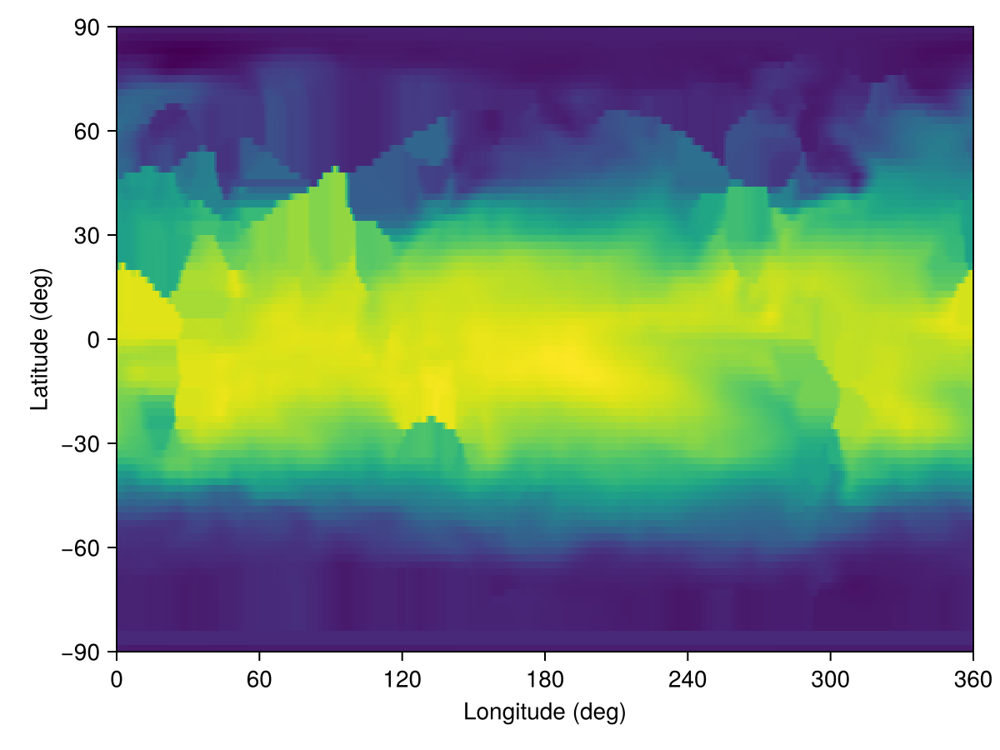
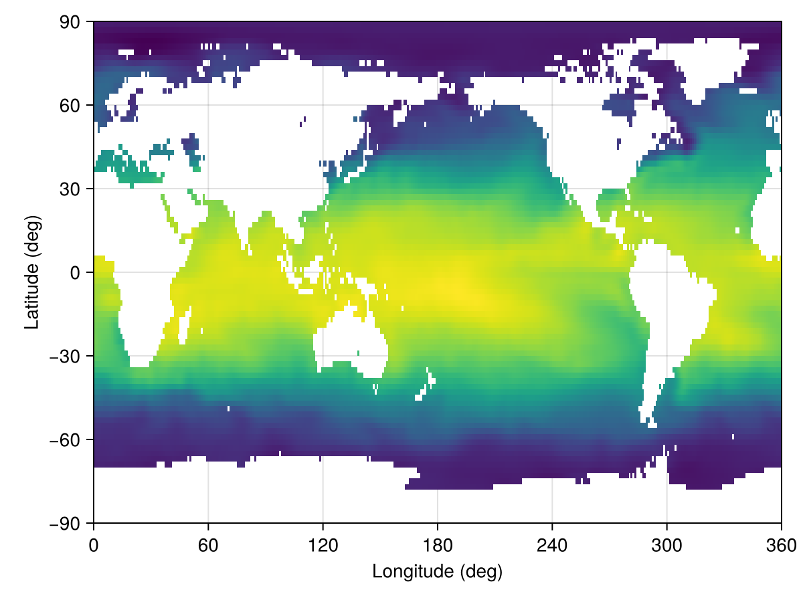

Metadata
Metadata is an abstraction that represents data, but does not embody it. Unlike Oceananigans.Field, which points to an array occupying space in memory, Metadata only contains information about where files are stored, their origin, the grid they live on, and the date(s) they correspond to (if any).
NumericalEarth.DataWrangling.Metadata — Type
Metadata(variable_name;
dataset,
dates = all_dates(dataset, variable_name),
dir = default_download_directory(dataset),
region = nothing,
filename = nothing,
start_date = nothing,
end_date = nothing)Metadata holding a specific dataset information.
Argument
variable_name: a symbol representing the name of the variable (for example,:temperature,:salinity,:u_velocity, etc)
Keyword Arguments
dataset: Supported datasets areETOPO2022(),ECCO2Monthly(),ECCO2Daily(),ECCO4Monthly(),EN4Monthly(),GLORYSDaily(),GLORYSMonthly(),RepeatYearJRA55(), andMultiYearJRA55().dates: The dates of the dataset (Dates.AbstractDateTimeorCFTime.AbstractCFDateTime). Note thatdatescan either be a range or a vector of dates, representing a time-series. For a single date, useMetadatum.start_date: Ifdates = nothing, we can prescribe the first date of metadata as a date (Dates.AbstractDateTimeorCFTime.AbstractCFDateTime). If outside the date range of the dataset, the first allowable date is chosen. Default: nothing.end_date: Ifdates = nothing, we can prescribe the last date of metadata as a date (Dates.AbstractDateTimeorCFTime.AbstractCFDateTime). If outside the date range of the dataset, the last allowable date is chosen. Default: nothing.region: Specifies the spatial region of the dataset. Can be aBoundingBoxfor a rectangular region, aColumnfor a single horizontal location, ornothingfor the full domain.filename: The filename(s) for the dataset. Ifnothing, the filename is computed from the dataset type. Can be aString(single file for all dates) or aDatewiseFilename(one file per date).dir: The directory where the dataset is stored.
When Metadata represents just one date, we call it Metadatum. For example, consider global temperature from January 1st, 2010 from the EN4 dataset,
using NumericalEarth, Dates
metadatum = Metadatum(:temperature;
dataset = EN4Monthly(),
date = Date(2010, 1, 1))Metadatum{EN4Monthly, DateTime}:
├── name: temperature
├── dataset: EN4Monthly
├── dates: 2010-01-01 00:00:00
├── filename: EN.4.2.2.f.analysis.g10.201001.nc
└── dir: /storage5/github-action-runners/julia-depot/scratchspaces/904d977b-046a-4731-8b86-9235c0d1ef02/EN4To materialize the data described by a metadatum, we wrap it in an Oceananigans' Field,
using Oceananigans
T_native = Field(metadatum)360×173×42 Field{Center, Center, Center} on LatitudeLongitudeGrid on CPU
├── grid: 360×173×42 LatitudeLongitudeGrid{Float32, Periodic, Bounded, Bounded} on CPU with 3×3×3 halo
├── boundary conditions: FieldBoundaryConditions
│ └── west: Periodic, east: Periodic, south: ZeroFlux, north: ZeroFlux, bottom: ZeroFlux, top: ZeroFlux, immersed: Nothing
└── data: 366×179×48 OffsetArray(::Array{Float32, 3}, -2:363, -2:176, -2:45) with eltype Float32 with indices -2:363×-2:176×-2:45
└── max=30.7835, min=-3.99887, mean=6.16979We can also interpolate the data on a user-defined grid by using the function set!,
grid = LatitudeLongitudeGrid(size = (360, 90, 1),
latitude = (-90, 90),
longitude = (0, 360),
z = (0, 1))
T = CenterField(grid)
set!(T, metadatum)360×90×1 Field{Center, Center, Center} on LatitudeLongitudeGrid on CPU
├── grid: 360×90×1 LatitudeLongitudeGrid{Float64, Periodic, Bounded, Bounded} on CPU with 3×3×1 halo
├── boundary conditions: FieldBoundaryConditions
│ └── west: Periodic, east: Periodic, south: Value, north: Value, bottom: ZeroFlux, top: ZeroFlux, immersed: Nothing
└── data: 366×96×3 OffsetArray(::Array{Float64, 3}, -2:363, -2:93, 0:2) with eltype Float64 with indices -2:363×-2:93×0:2
└── max=30.773, min=-3.99792, mean=12.3218and then we can plot it:
using CairoMakie
heatmap(T)
This looks a bit odd, but less so if we download bathymetry (for which we also use Metadata under the hood) to create a temperature field with a land mask,
bottom_height = regrid_bathymetry(grid)
grid = ImmersedBoundaryGrid(grid, GridFittedBottom(bottom_height))
T = CenterField(grid)
set!(T, metadatum)
heatmap(T)
The key ingredients stored in a Metadata or Metadatum object are:
- the variable name (for example
:temperatureor:u_velocity); - the dataset (such as
EN4Monthly,ECCO2Daily, orGLORYSMonthly); - the temporal coverage: either a single timestamp (
Metadatum) or a range/vector of dates (Metadata); - an optional
regiondescribing the spatial extent — either aBoundingBoxfor a rectangular sub-domain, aColumnfor a single horizontal location, ornothingfor the full global domain (see Regions, locations, and FieldTimeSeries); - the on-disk
directory where the dataset files are cached.
This bookkeeping lets downstream utilities (for example set! or FieldTimeSeries) request exactly the slices of data they need, and it keeps track of where those slices live so we do not redownload them unnecessarily.
Bundling variables with MetadataSet
Workflows often need many variables from the same dataset — for example, temperature and salinity to initialize an ocean model, or wind, humidity, pressure, and precipitation to drive an atmosphere. Writing one Metadata (or Metadatum) per variable repeats the same dataset, dates, region, and dir over and over. A MetadataSet bundles those variables into one object whose elements are still individual Metadata/Metadatum:
mset = MetadataSet(:temperature, :salinity;
dataset = EN4Monthly(),
date = Date(2010, 1, 1))MetadataSet{EN4Monthly, DateTime}:
├── names: (:temperature, :salinity)
├── dataset: EN4Monthly
├── dates: 2010-01-01 00:00:00
└── dir: /storage5/github-action-runners/julia-depot/scratchspaces/904d977b-046a-4731-8b86-9235c0d1ef02/EN4The variable axis is exposed via property and indexed access; struct fields stay reachable too. With a scalar date, each element is a Metadatum:
mset.temperature # → a `Metadatum`Metadatum{EN4Monthly, DateTime}:
├── name: temperature
├── dataset: EN4Monthly
├── dates: 2010-01-01 00:00:00
├── filename: EN.4.2.2.f.analysis.g10.201001.nc
└── dir: /storage5/github-action-runners/julia-depot/scratchspaces/904d977b-046a-4731-8b86-9235c0d1ef02/EN4mset[:salinity] === mset[2] # property and indexed access are symmetrictruekeys(mset), mset.dataset # the variable axis, plus shared kwargs((:temperature, :salinity), EN4Monthly())Pass a dates range (or vector) instead of a scalar date to bundle a time axis; each element is then a Metadata covering that range:
mset_ts = MetadataSet(:temperature, :salinity;
dataset = EN4Monthly(),
dates = DateTime(2010, 1, 1):Month(1):DateTime(2010, 3, 1))
mset_ts.temperature # → a `Metadata` (multi-date)Metadata{EN4Monthly, StepRange{DateTime, Month}}:
├── name: temperature
├── dataset: EN4Monthly
├── dates: 3-element StepRange{DateTime, Month}
├── filename: NumericalEarth.DataWrangling.DatewiseFilename{Vector{String}}(["EN.4.2.2.f.analysis.g10.201001.nc", "EN.4.2.2.f.analysis.g10.201002.nc", "EN.4.2.2.f.analysis.g10.201003.nc"])
└── dir: /storage5/github-action-runners/julia-depot/scratchspaces/904d977b-046a-4731-8b86-9235c0d1ef02/EN4set!(model, mset) — auto-routing
set!(model, mset) translates each variable's verbose dataset name (:temperature, :salinity, ...) to the short model field-name the model expects (:T, :S, :u, :ℵ, ...) and forwards the result as keyword arguments to the model's underlying set!. The translation table lives in NumericalEarth.DataWrangling.variable_glossary, populated from the conventions in Notation — so a coupled set can drive ocean and sea-ice components from one call:
mset = MetadataSet(:temperature, :salinity,
:sea_ice_thickness, :sea_ice_concentration;
dataset = ECCO4Monthly(), date = start_date)
set!(ocean.model, mset) # picks up :temperature, :salinity → T, S
set!(sea_ice.model, mset) # picks up :sea_ice_thickness, :sea_ice_concentration → h, ℵVariables absent from variable_glossary are silently skipped (lets one set partially drive each component without manual filtering).
Building Fields and FieldTimeSeries in bulk
Field(mset, arch=CPU(); kw...) and FieldTimeSeries(mset, arch_or_grid; kw...) build a NamedTuple keyed by the variable names, with each value materialized from the underlying per-variable Metadata. Field requires a scalar date (one snapshot per variable); for multi-date sets, use FieldTimeSeries:
fields = Field(mset) # (; temperature = Field, salinity = Field)
fields.temperature360×173×42 Field{Center, Center, Center} on LatitudeLongitudeGrid on CPU
├── grid: 360×173×42 LatitudeLongitudeGrid{Float32, Periodic, Bounded, Bounded} on CPU with 3×3×3 halo
├── boundary conditions: FieldBoundaryConditions
│ └── west: Periodic, east: Periodic, south: ZeroFlux, north: ZeroFlux, bottom: ZeroFlux, top: ZeroFlux, immersed: Nothing
└── data: 366×179×48 OffsetArray(::Array{Float32, 3}, -2:363, -2:176, -2:45) with eltype Float32 with indices -2:363×-2:176×-2:45
└── max=30.7835, min=-3.99887, mean=6.16979fts = FieldTimeSeries(mset_ts) # NamedTuple of FieldTimeSeries, one per variable
fts.temperature[1] # first temperature snapshot, as a Field360×173×42 Field{Center, Center, Center} on LatitudeLongitudeGrid on CPU
├── grid: 360×173×42 LatitudeLongitudeGrid{Float32, Periodic, Bounded, Bounded} on CPU with 3×3×3 halo
├── boundary conditions: FieldBoundaryConditions
│ └── west: Periodic, east: Periodic, south: ZeroFlux, north: ZeroFlux, bottom: ZeroFlux, top: ZeroFlux, immersed: Nothing
└── data: 366×179×48 OffsetArray(view(::Array{Float32, 4}, :, :, :, 1), -2:363, -2:176, -2:45) with eltype Float32 with indices -2:363×-2:176×-2:45
└── max=30.7835, min=-3.99887, mean=6.16979Downloading
download(mset) fetches every variable in the set. The default is a per-variable loop; backends that support batched multi-variable requests override this — for example, ERA5 pressure-level sets route through one CDS API request per calendar day instead of one per (variable, day) pair.
Supported datasets
NumericalEarth currently ships connectors for the following data products:
| Dataset | Supported Variables | Documentation Link |
|---|---|---|
| Bathymetry | ||
ETOPO2022 | Supported variables | NOAA ETOPO 2022 overview |
GEBCO2024 | Supported variables | GEBCO 2024 overview |
IBCSOv2 | Supported variables | IBCSO overview |
IBCAOv5 | Supported variables | IBCAO overview |
| Ocean reanalysis | ||
ECCO2Monthly | Supported variables | ECCO2 documentation |
ECCO2Daily | Supported variables | ECCO2 documentation |
ECCO4Monthly | Supported variables | ECCO V4r4 product guide |
EN4Monthly | Supported variables | Met Office EN4 overview |
GLORYSDaily | Supported variables | Copernicus GLORYS product page |
GLORYSMonthly | Supported variables | Copernicus GLORYS product page |
| Atmospheric forcing | ||
RepeatYearJRA55 | Supported variables | JRA-55 Reanalysis |
MultiYearJRA55 | Supported variables | JRA-55 Reanalysis |